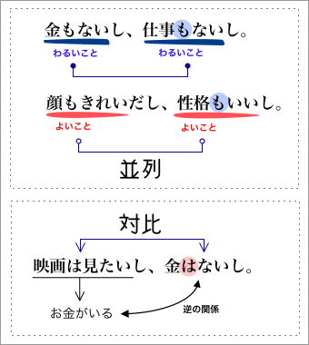
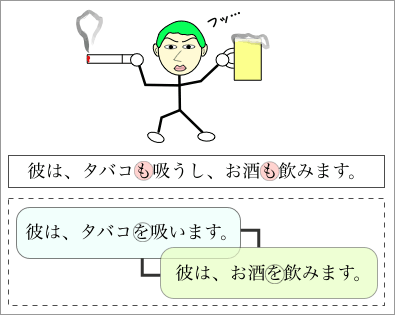
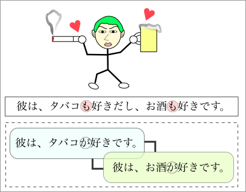

並列と対比を表わす接続助詞

接続助詞の「し」と「ば」は、どちらも並列と対比を表わす。
並列とは、性質が似ているものを並べて表現するものである。一方、対比とは、逆・反対の関係にあるものを比べて表現するものである。
また、「し」には、理由を表わす用法がある。この用法は、「……し。」の形で、話しことばの文末によく現われる。
- 並列
-
- 性質が似ているものを並べて表現する
- 「それに」、「しかも」の意味をあらわす
- 対比
-
- 逆・反対のものを比べて表現する
- 「けれども」、「しかし」の意味をあらわす。
「し」：並列

「彼は、タバコも吸うし、お酒も飲みます。」という文で、接続助詞の「し」は並列を表わしている。ここでは、『タバコを吸うこと』と『お酒を飲むこと』とが、同じ種類の事柄として並列で示されている。
「彼は、タバコも吸うし、お酒も飲みます。」という文は、「彼は、タバコを吸います。」という文と「彼は、お酒を飲みます。」という文を合わせたものと同じである。ただし、２つの文のとき「［名詞］を［動詞］」となるところが、並列の文では「［名詞］も［動詞］」となることに注意が必要である。

また、「彼は、タバコも好きだし、お酒も好きです。」という文は、「彼は、タバコを吸が好きです。」と「彼は、お酒が好きです。」の２文を合わせたものと同じ意味である。このような場合も、２つの文のとき「［名詞］が［形容詞］」となるところが、並列の文では「［名詞］も［形容詞］」となる。
接続助詞の前の形
なお、文末が敬体（「吸います」「好きです」）ならば、接続助詞の前にある動詞や形容詞は、敬体（「吸います」「好きです」）でも、常体（「吸う」「好きです」）でも同じ意味になる（ていねいさに差はない）。ただし、文末が常体（「吸う」「好きです」）ならば、接続助詞の前にある動詞や形容詞も常体（「吸う」「好きです」）にしなければならない。
- ◎ 彼は、タバコも吸うし、お酒も飲みます。
- ◎ 彼は、タバコも吸いますし、お酒も飲みます。
- ◎ 彼は、タバコも吸うし、お酒も飲む。
- × 彼は、タバコも吸いますし、お酒も飲む。
- ◎ 彼は、タバコも好きだし、お酒も好きです。
- ◎ 彼は、タバコも好きですし、お酒も好きです。
- ◎ 彼は、タバコも好きだし、お酒も好きだ。
- × 彼は、タバコも好きですし、お酒も好きだ。
用法と例文
- 〜し〜
-
- 並列をあらわす：『Ａも〜し、Ｂも〜(し)』／『Ａは〜し、Ｂは〜しで』
- お金もないし、時間もないし。
- 金もないし、仕事もない。
- 背も高いし、かっこいいし、お金まである。
- 雨も降るし、風も吹くし、ひどい天気だ。
- 雨は降るし、風は吹くしで、家に帰れなかった。
- 対比をあらわす：『Ａは〜し、Ｂは〜し』
- 映画は見たいし、お金はないし、どうしよう。
- 台風は来るし、授業はあるし、本当に困った。
- 理由をあらわす：『〜し』
- 授業もあるし、サークルもあるし、学校に行かなくちゃ。
- お金もあるし、家でも買おうか。
- どうせ暇ですし。（＝どうせ暇ですから。）
- 今日は楽しかったです。食事もおいしかったですし。
- 〜ば〜
-
- 並列を表わす
- 彼女は、金もあれば、名誉もある。
- その日は風も吹けば、雨も降るで大変でした。
- 都会には、緑もなければ潤いもない。
- 対比を表わす
- 頭のいい人もいれば、悪い人もいる。
- カラオケが好きな人もいれば、お酒が好きな人もいる。
- 晴れの日もあれば、雨の日もあれば、くもりの日もある。